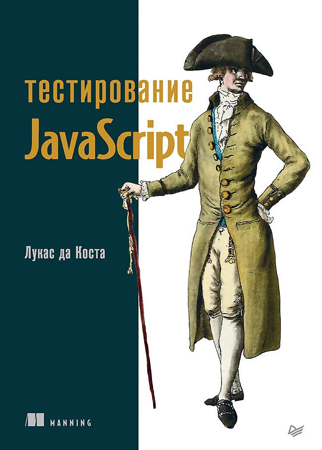

|  | О чём книга? Автоматизированное тестирование – залог стабильной разработки качественных приложений. Полноценное тестирование должно охватывать отдельные функции, проверять интеграцию разных частей вашего кода и обеспечивать корректность с точки зрения пользователя. Книга научит вас быстро и уверенно создавать надежное программное обеспечение. Вы узнаете, как реализовать план автоматизированного тестирования для JavaScript-приложений. В издании описываются стратегии тестирования, обсуждаются полезные инструменты и библиотеки, а также объясняется, как развивать культуру, ориентированную на качество. Вы исследуете подходы к тестированию как серверных, так и клиентских приложений, а также научитесь проверять свое программное обеспечение быстрее и надежнее. |
|
|---|---|---|
| Заказать книгу можно здесь | ||
| You can never have too many books. Read books! |